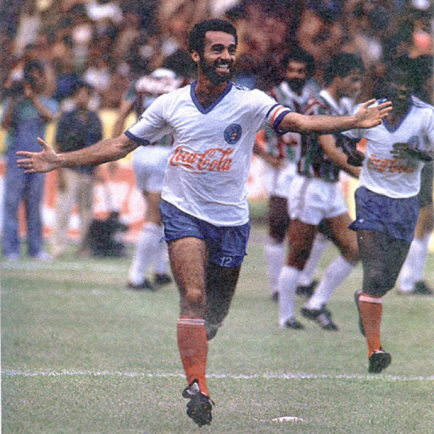

Bahia
No dia 8 de dezembro de 1930, dia de Nossa Senhora da Conceição da Praia, quatro ex-jogadores do Clube Bahiano de Tênis (Carlos Koch, Eugênio Walter, o Guarany, Fernando Tude e Júlio Almeida), além de um da Associação Atlética da Bahia (Waldemar de Azevedo), num encontro casual no Cabaré do Jokey, em Salvador, discutiram a formação de um novo time de futebol. O grupo estava sem poder praticar o esporte que amava, porque as agremiações que defendiam tinham resolvido acabar com seus departamentos de futebol. Quatro dias depois, mais de 70 pessoas, a maioria ex-atletas da AAB e do Bahiano, reuniram-se para definir os rumos do novo clube. A assembléia foi presidida por Otavio Carvalho e secretariada por Fernando Tude e Aroldo Maia. Naquela reunião, foram definidas as cores da Bahia para o novo clube (uniforme com a camisa branca e o calção azul com uma faixa vermelha na cintura) e Otavio Carvalho acabou nomeado presidente provisoriamente.
Títulos
Campeonato Brasileiro: 2
Copa do nordeste: 2
Campeonato Baiano: 49
Ídolos
- 
Bobô
Quando perguntado sobre o maior ídolo da história do clube, o torcedor do Bahia logo vai lembrar-se de Bobô, o grande herói da conquista do título do Campeonato Brasileiro de 1988. E com muita razão, pois na competição, o jogador fez história ao decidir a grande final contra o SC Internacional marcando dois gols em vitória por 2 a 1. Essa que é considerada uma das conquistas mais improváveis da história do futebol brasileiro, o que aumentou a façanha do time comandado pelo lendário Evaristo de Macedo.
Charles
Charles surgiu das categorias de base do Bahia em um dos melhores momentos do clube, após o título brasileiro de 1988. Naquele período ele teve como missão continuar o legado do time, que viria a perder alguns de seus principais jogadores pouco depois, dentre eles o ídolo Bobô.
Nonato
Nonato é um dos mais recentes ídolos da história do Bahia. Revelado pelo clube em 1998, aos 19 anos de idade, o camisa 9 começou impressionando desde o cedo, mostrando muita categoria e um aguçado faro de gol. Seu primeiro título não demoraria em chegar, sendo ele o Campeonato Baiano de 1999, no qual Nonato foi um dos destaques na conquista. Na temporada seguinte, ele voltaria a faturar a competição, sendo mais uma vez um dos principais jogadores.
Arena Fonte Nova
A Arena Fonte Nova é um estádio de futebol localizado em Salvador, no estado brasileiro da Bahia, reconstruído no mesmo local do antigo Estádio Octávio Mangabeira.[11] O nome oficial do equipamento é Complexo Esportivo Cultural Octávio Mangabeira.[12] Entretanto, por questões de patrocínios de nome ganhou a denominação Itaipava Arena Fonte Nova, ao mesmo tempo que manteve o apelido do antigo estádio que substituiu, também sendo conhecido popularmente como Fonte Nova.
Torcida
A Torcida Organizada Bamor (T.O.B), ou simplesmente Bamor é uma torcida organizada do Esporte Clube Bahia.[1] Durante as partidas do clube, a Bamor fica localizada na arquibancada norte da Arena Fonte Nova A torcida está organizada em "distritos", para qual cada bairro residem os integrantes para facilitar o acesso. A Bamor é a única torcida organizada da Bahia tendo em vista que a torcida é enorme.